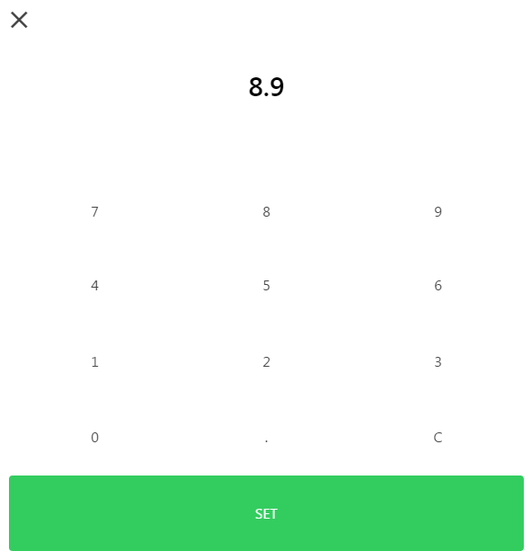
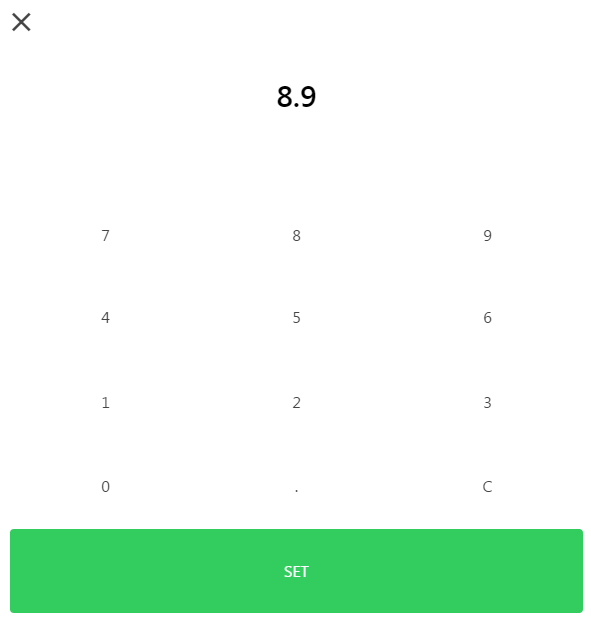

Welcome to Ionic Numpad.
This module aimes to provide an easy to use, and configurable service to show a numpad modal in Ionic projects, and return a promise which success with the returned number.
Screen shot

This module aimes to provide an easy to use, and configurable service to show a numpad modal in Ionic projects, and return a promise which success with the returned number.
